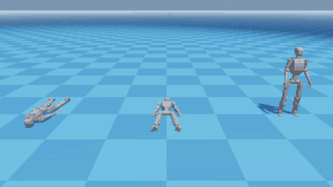

Overview
TRACE is a single reinforcement-learning policy for the ROBOTIS K1 humanoid (23 DoF). It tracks a dance, gets up by itself after falling face up or face down, and goes back to the dance without any external mode switch. A learned proprioceptive gate blends a Tracking expert and a Recovery expert. The policy was trained in Isaac Lab with the Newton (MuJoCo-Warp) backend.
Interactive Demo
Physics (MuJoCo WebAssembly) and the policy (ONNX Runtime Web) run on your device. The first load takes a few seconds. Open the demo in a full window.
Heading alignment. The Recovery expert was trained lying in one heading relative to the dance. Once a fallen robot has lain still for 0.3 s, the demo turns the dance reference to the robot's lying heading, so it gets up from any direction and dances on facing its new heading. In a CPU-MuJoCo push test, falls that came back to the dance went from 13/26 without it to 26/26 with it.
Results

| Metric (run 23, iteration 40,600) | Supine | Prone |
|---|---|---|
| Recovery success at the end of training | 0.997 | 0.999 |
| Iteration where success first reaches 0.95 | ~2.1k | ~4.0k |
| Frame-0 eval: step where Tracking starts (Newton) | 261 (5.2 s) | 338 (6.8 s) |
| Same in CPU MuJoCo (sim-to-sim check) | 206 (4.1 s) | 281 (5.6 s) |
| Perturbed fixed starts recovered (both motions) | 192 / 192 | |
Method
- Two experts (Tracking and Recovery, 508→512→256→128→23 MLPs) and a gate on 4 frames of proprioception (ang. velocity, joint position/velocity, last action, gravity).
- Hidden get-up references: the actor sees only the dance reference; Supine and Prone get-ups shape the reward only.
- Transition: 1.5 s in which the Tracking reward is ramped in after the robot stands up.
- Adaptive reset sampling with a 2 s failure look-ahead (BeyondMimic) and trimmed get-up references.
Builds on ROBOTIS cyclo_lab, StableMimic and BeyondMimic. The demo is built with mjswan (MuJoCo 3.11, mjlab 1.6).